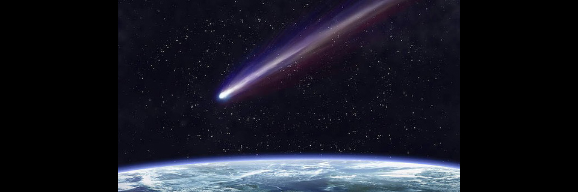
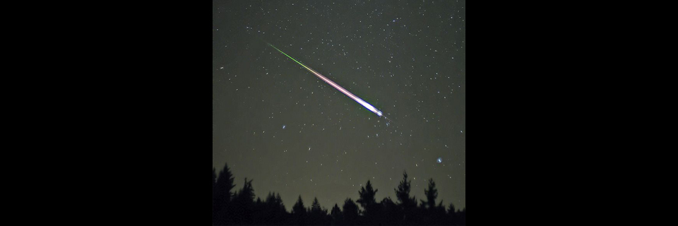
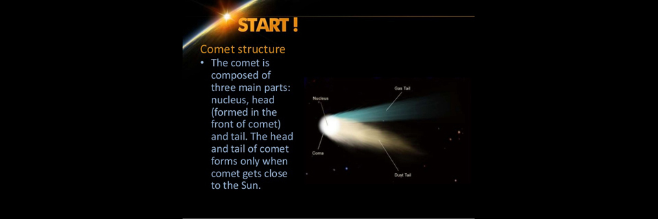

Comets
- 
- 


- 
Comets
A comet is an icy small Solar System body that, when passing close to the Sun, heats up and begins to outgas, displaying a visible atmosphere or coma, and sometimes also a tail. These phenomena are due to the effects of solar radiation and the solar wind upon the nucleus of the comet. Comet nuclei range from a few hundred metres to tens of kilometres across and are composed of loose collections of ice, dust, and small rocky particles. The coma and tail are much larger and, if sufficiently bright, may be seen from the Earth without the aid of a telescope. Comets have been observed and recorded since ancient times by many cultures.
Comets usually have highly eccentric elliptical orbits, and they have a wide range of orbital periods, ranging from several years to potentially several millions of years. Short-period comets originate in the Kuiper belt or its associated scattered disc, which lie beyond the orbit of Neptune. Long-period comets are thought to originate in the Oort cloud, a spherical cloud of icy bodies extending from outside the Kuiper belt to halfway to the next nearest star. Long-period comets are directed towards the Sun from the Oort cloud by gravitational perturbations caused by passing stars and the galactic tide. Hyperbolic comets may pass once through the inner Solar System before being flung out to interstellar space.
Comets are distinguished from asteroids by the presence of an extended, gravitationally unbound atmosphere surrounding their central nucleus. This atmosphere has parts termed the coma (the central part immediately surrounding the nucleus) and the tail (a typically linear section consisting of dust or gas blown out from the coma by the Sun's light pressure or outstreaming solar wind plasma). However, extinct comets that have passed close to the Sun many times have lost nearly all of their volatile ices and dust and may come to resemble small asteroids.[1] Asteroids are thought to have a different origin from comets, having formed inside the orbit of Jupiter rather than in the outer Solar System.[2][3] The discovery of main-belt comets and active centaurs has blurred the distinction between asteroids and comets.
As of November 2014 there are 5,253 known comets,[4] a number that is steadily increasing. However, this represents only a tiny fraction of the total potential comet population, as the reservoir of comet-like bodies in the outer Solar System (in the Oort cloud) is estimated to be one trillion.[5][6] Roughly one comet per year is visible to the naked eye, though many of these are faint and unspectacular.[7] Particularly bright examples are called "Great Comets". Comets have been visited by unmanned probes such as the European Space Agency's Rosetta, which became the first ever to land a robotic spacecraft on a comet,[8] and NASA's Deep Impact, which blasted a crater on Comet Tempel 1 to study its interior.